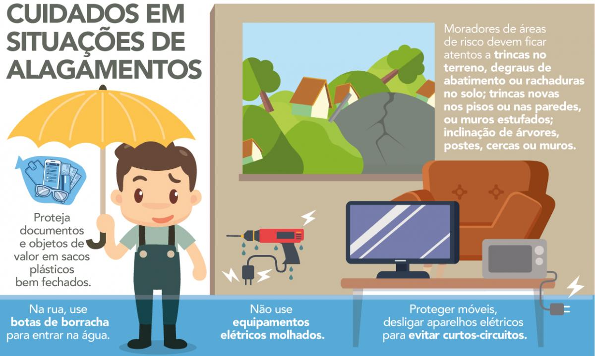
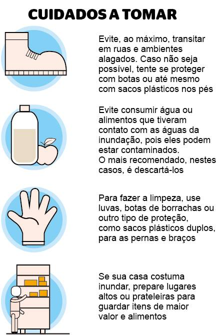
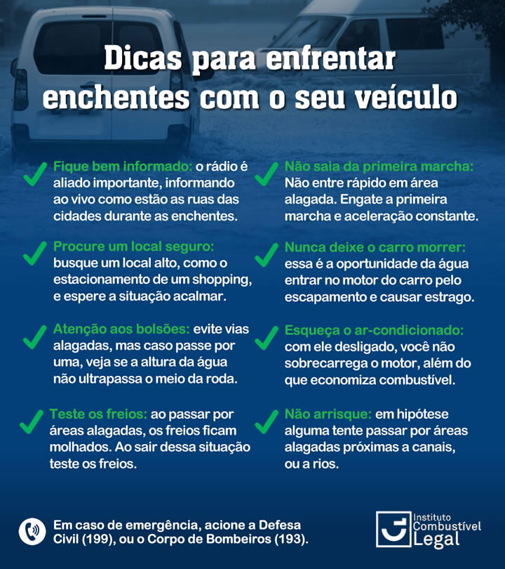

Perguntas Frequentes
O que fazer em caso de enchente?
Como se preparar para uma enchente?
Quais são os sinais de que uma enchente pode ocorrer?
O que fazer após uma enchente?
Como ajudar pessoas afetadas por enchentes?
Solidariedade e Ação Comunitária
Contribua para ajudar quem mais precisa durante as enchentes.
Necessidades Urgentes
- Alimentos não perecíveis
- Roupas e cobertores
- Itens de higiene pessoal
- Medicamentos e primeiros socorros
- Material escolar para crianças
- Brinquedos e itens de conforto
Participe com Doações
Ajude a comunidade em situações de enchente. Preencha o formulário abaixo para contribuir:
Cadastro de Voluntários
Seja um voluntário e faça a diferença!
Tem Sugestões ou Dúvidas?
Entre em Contato Conosco
Estamos aqui para ouvir você! Se tiver perguntas, sugestões ou precisar de mais informações, não hesite em nos contatar.
Informações de Contato
- E-mail: contato@email.com
- Telefone: (11) 9999-9999
- Endereço: Rua Exemplo, 123, Cidade, Estado, CEP 00000-000
Redes Sociais
Siga-nos para atualizações e informações: